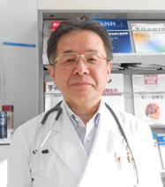

合地 研吾（ごうち けんご）
高松高校昭和47年卒
医師を志したころからの夢である地域医療に携わるため、60歳を間近にして、北海道「斜里町国民健康保険病院」に赴任する。(Last updated:2017.3)
プロフィール

昭和47年(1972) 高松高校卒業
帝京大学医学部卒業後
帝京大学医学部第一内科入局
以降、小川赤十字病院
フランスクロードベルナール病院
ウイルス研究室留学
帝京大学医学部内科学講座講師
賛育会病院副院長などを経て
H22(2010)4月 斜里町国民健康保険病院に赴任
H28(2016)4月 院長に就任
「斜里に赴任して、いろいろありました」（北海道医報(H27.12.1)より・要約）
大学への復帰の要請を断り、医師を志したころからの夢であった僻地医療、地域医療に少しでも携わりたいとの思いで、平成22年４月、住み慣れた東京を離れ、北海道斜里町の国民健康保険病院に、期待と不安を抱きつつ赴任しました。
最初の高齢の患者さんがご夫婦で診察室に入って来られ、最初の言葉が「先生、東京からこんな僻地に来ていただき感謝しております」と深々と頭を下げられました。
少し安堵し、とにかく2年間は頑張ってみようと思いました。
この5年間で行えた事を振り返ってみました。
(1) 訪問診療の導入
赴任当時、医療と介護との連携が全く取れておらず、要介護度４や５の人たちが辛い思いをして来院し、さらに病院で長時間待たされるのが常でした。
当院で訪問診療の必要性を解き、その年の10月より開始しました。
今や斜里町内広く知れ渡るようになり、延べ63名の訪問診療をさせていただきました。
(2) 脳卒中発症後の救急搬送に関して
当初、救急車はすべて当院を最初に受診することになっていました。しかし、脳卒中が強く疑われる患者さんが救急車で当院へ運ばれた場合、診断し必要な 処置を施し、専門機関である網走脳神経外科・リ ハビリテーション病院へ搬送するまで45分ほどかかります。これは時間的ロスです。
そこで、網走脳神経外科・リハ ビリテーション病院の先生方や救急隊員などと何度も話し合い、斜里町民への啓発も充分に行い、平成26年10月より、脳卒中が強く疑われる症例は、救急隊の判断で、斜里国保病院の医師から承諾を得たら直に網走脳神経外科・リハビリテーション病院へ搬送するシステムを確立しました。
(3) 町内の健康講座の開催
当院内科通院患者さんの75％は生活習慣病です。にもかかわらず、斜里町では町民向けに生活習慣病の予防や教育、啓発が全く行われていませんでした。
病院スタッフと協議を重ね、「高血圧」「糖尿病」に始まり、私の専門である「血液疾患 貧血」「関節リウマチ」と、毎年町民講座を開催することができ、年ごとに盛大になり、町民の年中行事の一つに定着するようになりました。
(4) 初期研修医や医学部生の地域医療実習への参加
赴任3年目より、旭川医大の6年生が地域医療実習で毎年12名が国保病院に来てくれ、田舎の末端の病院実習に真剣に取り組み、地域医療の必要性を肌で感じてくれるようになりました。
また2年前より、初期研修2年目の研修医が、 地域医療枠で当院を選択し、1ヵ月の研修を当院で行うようになりました。初年度は、私の母校である帝京大学より2名、昨年度は4名、そして今年度は帝京大学より7名、上野にある永寿総合病院（慶応大学医学部出身）より5名の研修医を引き受けることとなりました。
いろいろ戸惑いもありましたが、今は斜里に来てよかったと思えるようになりました。もう少し斜里で地域医療を頑張ってみようと思っています。